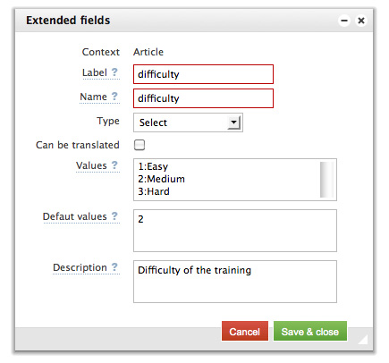
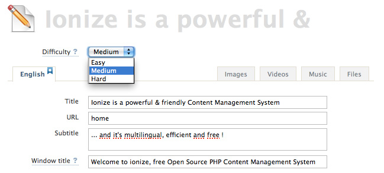

Extend Fields
Extend Fields extends the default data model by adding fields to page, article and media.
Extend Fields needs to be activated to be used.
To activate the Extend Fields :
- Activate the use of Extend Fields in : Settings > Advanced Settings
- Reload Ionize : Extend Fields are available in the menu Content > Extend Fields
Create an Extend Field
| Setting | Description |
|---|---|
| Context | Kind of content the current created Extend Field is attached to. |
| Name |
Name of the Extend Field. Used in the <ion:field /> tag to get the Extend Field value. |
| Name | Name of the Extend Field. |
| Label | Label displayed in Ionize for this Extend Field |
| Can be translated | When activated, this Extend Field can have a value for each installed language |
| Type |
Kind of data. Input : A simple text input Textarea : A simple textarea Textarea + Editor : The textarea will be displayed through a Wysiwyg texteditor Checkbox, Radio, Select : List of values |
| Values | Need to be used when checkbox, radio or select type is chosen. |
| Default value |
Used value when no value is set by the Editor. In case of checkbox, radio or select, the key must be used. |
| Description | Help displayed on the label. |
Set the Extend Field value
Once created, the Extend Field will appear in its context panel.
An article Extend Field will appear on the article edition panel.
Use an Extend Field in views
Extend Fields are use in views through a dedicated tag : <ion:field />.
In case of radio, checkbox or select, the returned value will be the key.
<!-- In the above example, if "Medium" is selected by the Editor, the value “2” will be returned. --> <ion:field name="difficulty" from="article" />
See the field tag documentation for more details.